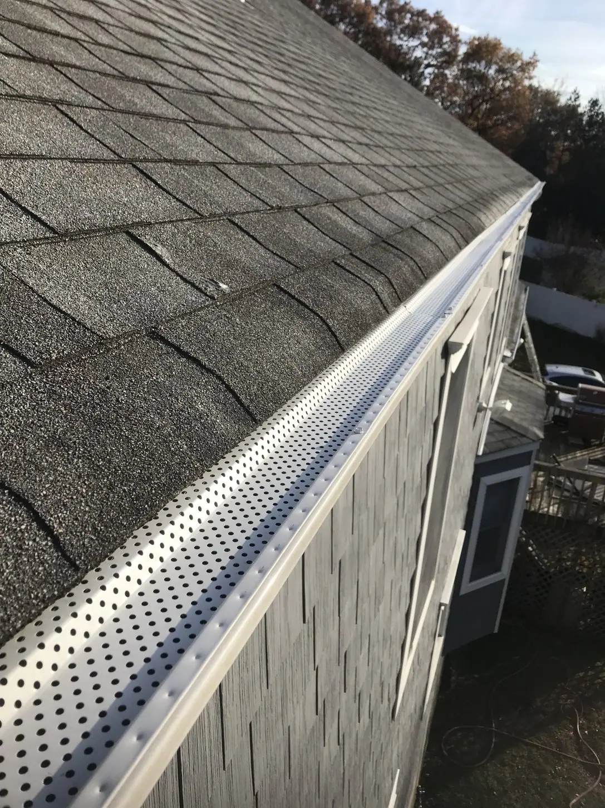
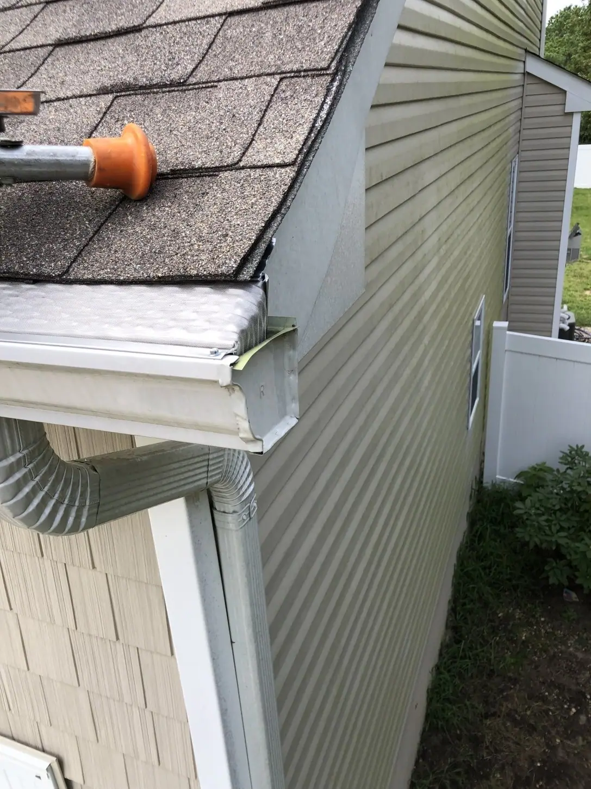
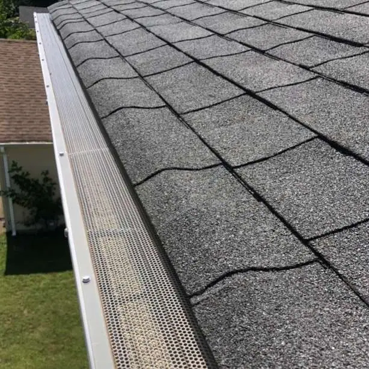

Gutter Guards
Guards reduce twigs, leaf matter, shingle grit, and other debris in your gutters.
Explore service →
Competitive Pricing | Free Consultations and Estimates | Family-Owned & Operated
Seamless Gutters · Gutter Guards · Downspouts · Repairs

Fixing busted downspouts or leaky sections can help prolong your gutter system’s service life, but if your gutter repair costs are adding up, replacing your worn-out gutters might be a smart idea.
Affordable Dryer Vent & Gutter Cleaning can update your property with seamless gutters that resist leaking. They also come in any color, which is sure to boost your home’s curb appeal. Contact us today to discover the perks of a seamless gutter installation.
Gutter systems and products that protect your home and complement its appearance.

Guards reduce twigs, leaf matter, shingle grit, and other debris in your gutters.
Explore service →
Repair, replace, or install downspouts and supporting gutter components.
Explore service →“Only good things to say here. Showed up early. Super clean work. Fixed up work that was done by others that did not know what they were doing. Polite, clean and courteous. Totally professional company.”
“Nick and AJ did a great job cleaning our gutters and the dryer vent. Nick was very thorough with the job. Nick was upfront with what needed to be done right away and what could wait. Found the prices for the job to be reasonable.”
From clogged dryer vents to gutter guards, we treat every home like family. Tell us what you need and we’ll help you decide on the next step.

When we install guards over the top of your gutters, the twigs, leaf matter, shingle grit, and other bits of debris that get into your system will drop significantly.

Photos from different properties; illustrative comparison.


Photos from different properties; illustrative comparison.
Clean gutters keep rainwater and melting ice flowing freely, which helps protect your roof, siding, and foundation from water damage.
Warranties vary per product and service. To learn more, call or text us at (732) 966-6914.
Ask about seamless gutter installation, gutter guards, and more.
From clogged dryer vents to gutter guards, we treat every home like family. Tell us what you need and we’ll help you decide on the next step.
Trained and certified to help keep your dryer running safely and efficiently.
Local · Family-Owned & Operated